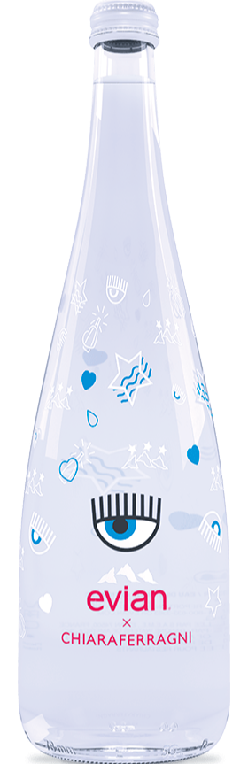

Our Water
Evian natural spring water contains only naturally occurring
electrolytes from our unique origin. How? As our water travels to the
source through layers of glacial rocks, it becomes enriched with a
unique blend of minerals and electrolytes giving evian its
distinctive, cool, crisp taste. This protected underground journey in
the heart of the French Alps has given evian water its unique taste
and mineral composition for over 200 years since Marquis first
discovered it!

Alexander Wang 2016 750 mL

Christian Lacroix 2017 750 mL

Chiara Ferragni 2018 750 mL